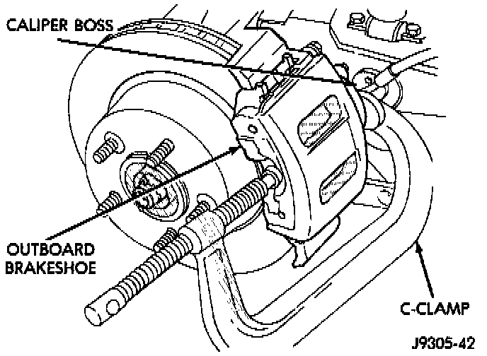
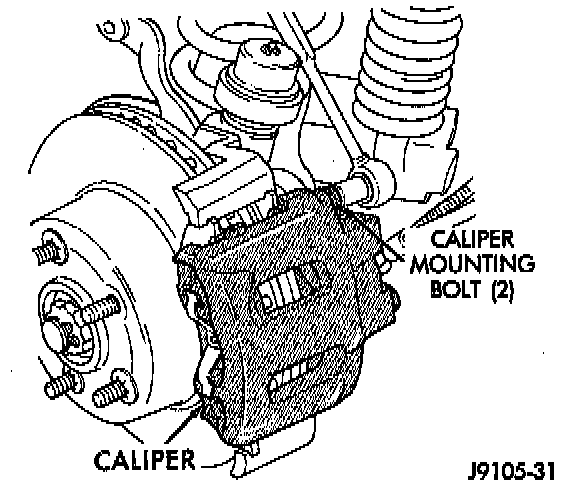
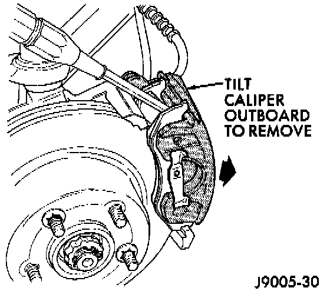
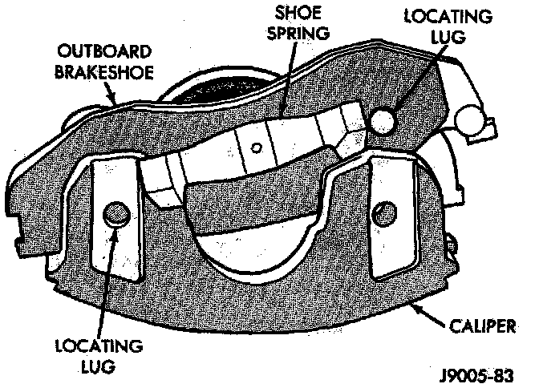
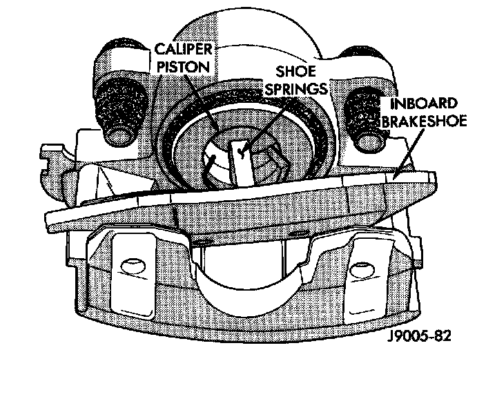

Removal
1. Raise vehicle and remove front wheel and tire assemblies.2. Drain small amount of fluid from master cylinder front brake reservoir with suction gun.

3. Bottom caliper piston in bore with C-clamp. Position clamp screw on outboard brake shoe and clamp frame on rear of caliper. Typical C-clamp attachment is shown. Do not allow clamp screw to bear directly on outboard shoe retainer spring. Use wood or metal spacer between shoe and clamp screw if necessary.

4. Remove caliper mounting bolts.

5. Tilt top of caliper outward with pry tool if necessary and remove caliper.
Removing Outboard Brakeshoe:

6. Remove outboard shoe by pressing one end of shoe inward to disengage shoe lug. Then rotate shoe upward until retainer spring clears caliper. Press opposite end of shoe inward to disengage shoe lug and rotate shoe up and out of caliper.
Inboard Brake Shoe Removal:

7. Remove inboard shoe. Grasp ends of shoe and tilt shoe outward to release springs from caliper piston. Then remove shoe from caliper.
NOTE: If original brake shoes will be used, keep them in sets left and right. They are not interchangeable.
8. Secure caliper to nearby suspension part with wire. Do not allow brake hose to support caliper weight.
9. Wipe caliper off with shop rags or towels. Do not use compressed air. Compressed air can unseat dust boot and force dirt into piston bore.